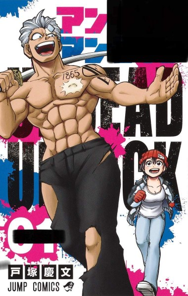
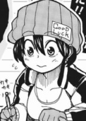
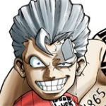

私が選ぶおすすめコミック第一位
この漫画のタイトルは？黒枠に埋まる文字はなんでしょう？

ヒント：略称はアンデラ。死と幸運を否定した言葉が入るよ。
登場人物紹介
風子

触れた者に不運を呼ぶアンラックの能力者。長らく人を遠ざけていたが、
大好きな漫画が終了したのを機に死を覚悟した直後、アンディと出会う。
性格：真面目で大人しいが、時折周囲を驚かすような行動力と心の強さを見せる。
アンディ

不死の体を持つアンデッドの能力者。風子の力で"本当に死"を得るために
行動を共にする。体の各部位を自在に超再生させることにより高い戦闘能力を持つ。
性格：野蛮で粗暴。一方素直で義理堅く、自分の非を認めた際には素直に謝罪する。
あらすじ
8歳の時に両親を含め200名以上を死に追いやってしまった事件から10年間家に引きこもり、
長期連載していた少女漫画の完結をきっかけに自殺を決意した少女出雲風子。風子は皮膚接触を行った相手に不運をもたらす「不運(アンラック）」
という異能から誰にも触れられないことに苦悩していた。そんな彼女が出会ったのは驚異的な再生能力を持ち、決して死ぬことがない人生を疎んで最高の死を望む
「不死（アンデッド）」の男。男は便宜上風子から「アンデッドだから」アンディと名付けられ、行動を共にするようになる。
アンディと風子を追う謎の組織ユニオンの刺客から「組織には能力者10名で構成された特殊チームがあり、メンバー入りすることで追われることはなくなる」と聞かされた二人は、
アンディの望みである「最高の死」を得るためにユニオンに入団し、数々の敵と世界の謎に対峙していく。
アンデッドアンラックをもっと詳しく知りたい方はこちら
後期プロジェクト zm19054後藤颯平